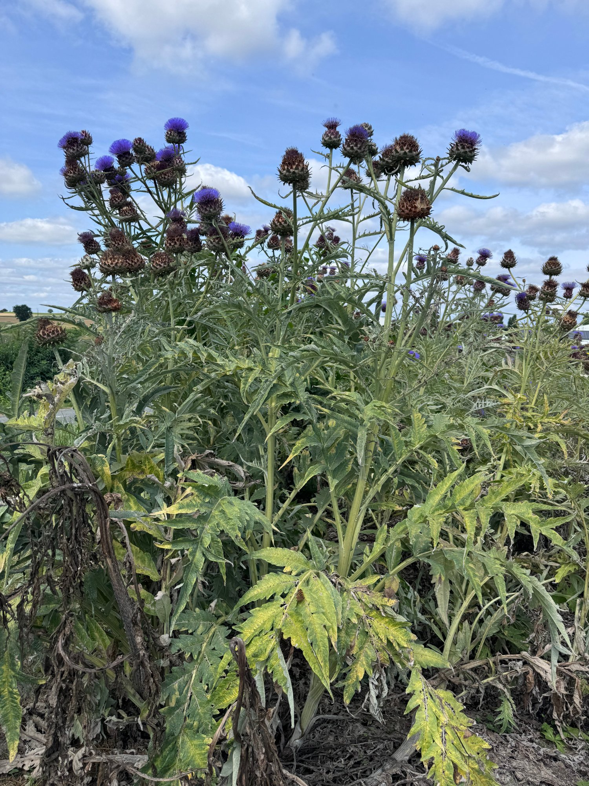

예전 야채를 기억하시나요?
예전 상추를 기억하시나요? 끝부분을 떼어내면 하얀 진액이 나왔고, 그 맛은 알싸하고 썼습니다. 그 성분의 정체는 "락투카리움(Lactucarium)" 입니다.
식물은 벌레나 뜨거운 태양으로부터 자신을 보호하기 위해 필사적으로 이 물질을 만들어냅니다. 이것이 우리 몸에 들어오면 강력한 "항산화 물질(파이토케미컬)" 로 작용하며 진정과 통증 완화, 젊음을 유지하는 에너지가 됩니다.
산나물이 쌉싸름한 이유는 척박한 야생에서 살아남기 위해 이 쌉싸름한 파이토케미컬(사포닌, 폴리페놀 등)을 훨씬 많이 만들어내기 때문입니다.
이런 물질들은 면역세포(대식세포, NK세포)를 활성화하는가 하면 장에서 콜레스테롤 흡수를 억제하고, 혈중 LDL을 감소시키는 것은 물론 세포의 DNA 손상을 억제합니다.
요즘 채소는 왜 달기만 할까요?
우리가 마트에서 사는 채소들이 달고 부드러워진 데에는 세 가지 안타까운 진실이 있습니다.
1. 소비자 기호에 맞춘 품종 개량
대중은 쓴맛보다 단맛과 부드러운 식감을 선호합니다. 종자 회사들은 시장성을 위해 쓴맛을 내는 유전자를 억제하고, 당도가 높고 수분이 많은 품종 위주로 개량해 보급했습니다.
즉, 약성보다는 먹기 좋은 맛을 선택한 결과입니다.
2. 질소 비료의 과다 사용
질소는 식물의 잎과 줄기를 아주 빠르게 키웁니다. 세포가 급격히 팽창하면서 수분 함량이 높아지니 상대적으로 쓴맛 성분은 희석되고, 비료 성분이 당 대사에 관여하면서 일시적으로 단맛이 도는 현상이 생깁니다.
더불어 질소 과잉으로 칼륨이나 칼슘 부족과, 기타 마그네슘, 아연과 같은 미네랄이 부족한 야채를 생산하는 결과를 초래합니다.
3. 하우스 재배 - 온실 속 화초 효과
야생의 산나물은 가뭄, 추위, 해충과 싸우며 쓴맛 성분을 축적합니다.
하지만 요즘 재배 채소는 온도, 습도, 영양분이 완벽하게 통제된 하우스에서 자랍니다. 싸울 대상이 없으니 굳이 에너지를 써서 쓴맛, 즉 우리 몸에 유익한 "2차 대사산물(방어 물질)" 을 만들 이유가 사라진 것입니다.
그래서 일부 학자들은 '야채 무용론' 까지 주장하고 있는 것입니다. 채소는 더 이상 영양분을 위해서가 아닌, 맛을 위해 섭취하고, 부족한 영양분은 각종 영양제로 채우는 결과를 초래한 것입니다.
캐비초크가 쓴 이유는 "약리작용" 때문입니다
적지 않은 소비자분들이 저희에게 질문합니다.
"저는 매일 아침마다 상당량의 야채로 샐러드를 만들어 먹습니다. 그런데 왜 감기나 잦은 질병으로 병원 출입이 잦은가요?"그런가 하면 많은 소비자들께서 묻습니다.
"왜 캐비초크는 이렇게 쓴가요?"그 질문 속에 우리가 잊고 있었던 진짜 채소의 생명력이 숨어 있습니다.
야생에 가까운 원료를 찾아서
진짜 약성을 가진 원료를 찾는다는 것은 쉬운 일이 아닙니다.
프랑스의 야생에 가까운 아티초크 밭. 척박한 환경에서 자란 식물일수록 강력한 파이토케미컬을 함유합니다.
좋은 원료란 사실 일반 소비자에겐 쓴맛으로 선호도가 떨어지는 야채입니다.
진정한 건강식품 원료는 식물이 자신을 지키기 위해 응축한 고농축 항산화 성분이 다량 포함되어야 합니다.
"입에 쓴 것이 몸에 좋다"는 말은 단순한 속담이 아닙니다. 과학적 사실입니다.
그래서 진짜 약성을 가진 제품을 섭취하면 마치 만병통치약이라도 된 양, 신체가 빠른 회복력을 보이는 겁니다.
쓴맛이 주는 신호
단맛에 길들여진 현대인의 식탁에서, 쓴맛은 당신의 몸이 비로소 진짜 영양을 만나고 있다는 신호입니다.
가공된 단맛 뒤에 숨겨진 영양의 빈껍데기가 아닌, 거친 자연이 준 생명의 정수를 경험해보세요.